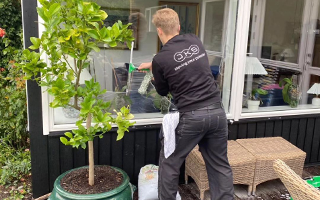

Hos Jørgensen og Svendsen vinduespolering er vi stolte af at være en del af lokalsamfundet. Vi har tjent vores kunder i Nordsjæland med vores professionelle vinduespudsertjenester. Vi er ikke bare vinduespudsere, vi er lokalt forankrede håndværkere, der ved, hvad det betyder at levere en førsteklasses service.
